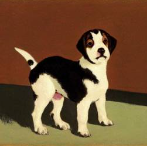
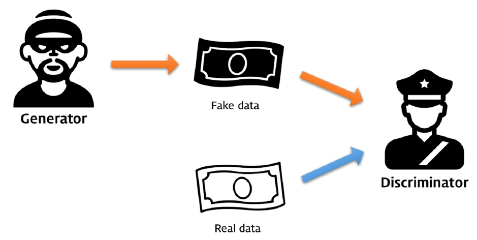
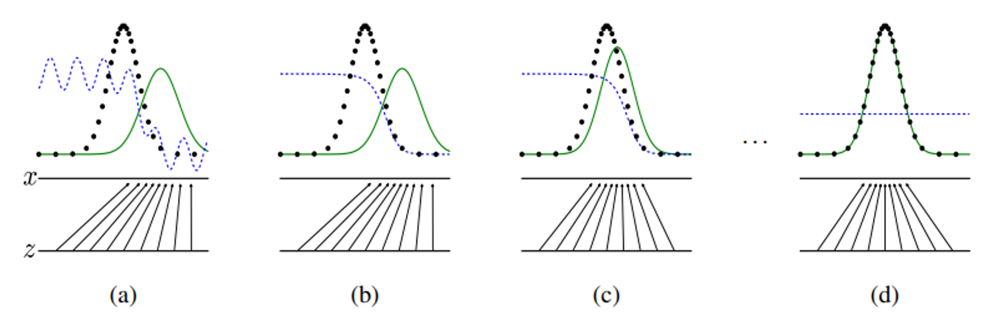
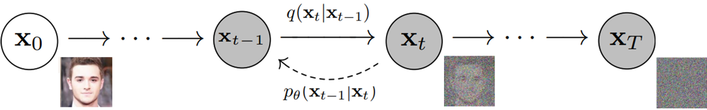
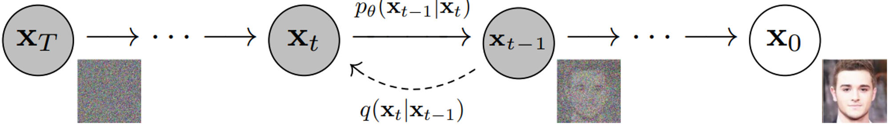
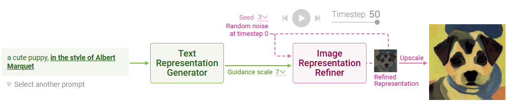
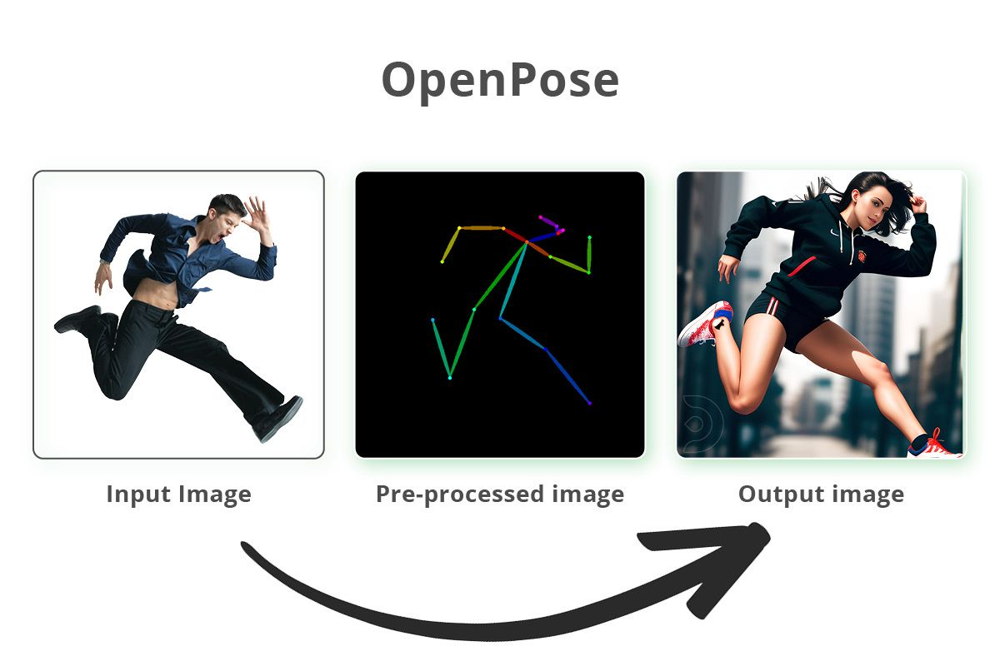

이미지 생성의 기초 개념
GAN과 Diffusion으로 이해하는 AI 이미지 생성 원리
◆ 오늘의 학습 내용
✦ 인공지능은 어떻게 이미지를 생성할까?
이미지 생성 인공지능은 노이즈로부터 그림을 생성하는 방법을 학습한 것입니다.
무작위 픽셀 데이터 — 아무런 의미 없는 잡음
AI가 노이즈에서 만들어낸 의미 있는 사진

이 과정을 가능하게 하는 두 가지 핵심 기술: GAN과 Diffusion
◆ GAN — Generative Adversarial Networks
적대적 생성 신경망
핵심 아이디어
두 개의 신경망이 서로 경쟁(적대)하면서 학습
- 생성자(Generator) — 위조범 역할
- 판별자(Discriminator) — 경찰 역할
- 경쟁을 통해 양쪽 모두 발전
비유로 이해하기

Generator(위조범) ↔ Discriminator(경찰) 경쟁 구조
✦ GAN 학습 과정 시각화
버튼을 클릭하여 학습 단계를 진행하세요
◆ 판별자와 생성자가 학습하는 능력
실제 이미지와 가짜 이미지를 판단하는 능력을 학습합니다
판별자를 속일 수 있는 가짜 이미지를 생성하는 능력을 학습합니다
학습 단계가 진행될수록 판별자와 생성자의 능력이 함께 향상됩니다
최종적으로 생성자가 만든 가짜 이미지는 진짜와 구분할 수 없는 수준에 도달합니다

(a) 초기 → (b) 판별자 학습 → (c) 생성자 학습 → (d) 균형 도달 (검정: 데이터 분포, 녹색: 생성 분포)
✦ GAN의 학습 결과
어느 순간 진짜 이미지와 생성된 이미지를 판별하지 못하는 단계에 이르게 됩니다
사진을 특정 화풍으로 변환 — CycleGAN
학습이 불안정하고, 모드 붕괴(mode collapse) 현상이 발생할 수 있음 → 이를 보완한 기술이 Diffusion 모델
▶ Diffusion 모델 이해하기
GAN의 한계를 넘어선 Diffusion 모델의 원리를 영상으로 살펴봅시다
영상을 시청한 후 다음 슬라이드에서 핵심 원리를 자세히 살펴봅니다
◆ Diffusion의 핵심 원리
확산 모델
이미지에 노이즈를 점진적으로 추가(확산)한 뒤, 그 과정을 역으로 되돌리는 방법(복원)을 학습
원본 이미지에 노이즈를 단계적으로 추가하여 완전한 노이즈로 만듦
노이즈에서 노이즈를 단계적으로 제거하여 이미지를 복원

▸ Forward: x₀(원본) → xₜ → x_T(노이즈)

◂ Reverse: x_T(노이즈) → xₜ₋₁ → x₀(복원)
✦ Diffusion 학습과 생성
모델이 무엇을 학습하고, 그것이 어떻게 이미지 생성에 활용되는지 체험하세요
◆ 이미지 생성 과정
- 01
랜덤 노이즈 생성
완전히 무작위인 노이즈 이미지에서 시작합니다
- 02
프롬프트 입력
사용자가 원하는 이미지를 텍스트로 설명합니다
- 03
단계적 노이즈 제거
프롬프트를 가이드로 삼아 노이즈를 조금씩 제거합니다
- 04
이미지 완성
모든 노이즈가 제거되면 프롬프트에 맞는 이미지가 완성됩니다
◆ Stable Diffusion의 구조
텍스트 프롬프트를 AI가 이해할 수 있는 수치적 표현으로 변환하는 모듈
CLIP 텍스트 인코더 사용
노이즈에서 프롬프트에 맞는 이미지를 단계적으로 정제하는 모듈
U-Net + 스케줄러 사용

Stable Diffusion 파이프라인: 프롬프트 → 텍스트 인코딩 → 노이즈 + 가이드 → 반복 정제 → 최종 이미지
✦ 프롬프트와 다양한 가이드
노이즈를 제거하는 과정 속에 프롬프트의 내용이 가이드 역할을 수행합니다
원하는 이미지를 언어로 설명하여 생성 방향을 결정
참조 이미지를 입력하여 스타일이나 구도를 반영
인물의 자세나 위치를 지정하여 구도를 제어

OpenPose 예시: 인물 포즈를 스켈레톤으로 추출하여 AI 이미지 생성의 가이드로 활용
✦ GAN vs Diffusion 비교
| 구분 | GAN | Diffusion |
|---|---|---|
| 핵심 원리 | 생성자 vs 판별자 경쟁 | 노이즈 추가 후 단계적 제거 |
| 학습 방식 | 적대적 학습 (두 네트워크) | 노이즈 예측 학습 (단일 네트워크) |
| 생성 속도 | 빠름 (한 번에 생성) | 느림 (수십~수백 단계) |
| 품질 | 높음 (특정 도메인) | 매우 높음 (다양한 도메인) |
| 안정성 | 불안정 (모드 붕괴) | 안정적 |
| 대표 모델 | StyleGAN, CycleGAN | DALL-E, Stable Diffusion, Midjourney |
수고하셨습니다
이미지 생성 AI의 기초 개념을 함께 알아보았습니다
오늘의 핵심
- 이미지 생성 AI는 노이즈에서 이미지를 만드는 방법을 학습한 것
- GAN은 생성자와 판별자의 적대적 경쟁으로 학습
- Diffusion은 노이즈를 단계적으로 제거하며, 프롬프트가 가이드 역할
- 현재 대부분의 AI 이미지 생성 서비스는 Diffusion 기반